To go back to Spain I decided to go through eastern Portugal and Salamanca. The cities in my path were Covilha, the second largest city in the Castelo Branco district, which is a university city in the mountains. From the road you can already see many tall buildings on the mountain and in the distance the old town, because this city originally had a defensive character.
Once you reach the northern half of the mountain where the city is, there are escalators. The first church that can be seen going up is that of the Sacred Heart, a common church from the 18th century.


Then we arrive at the Plaza Mayor where there are houses from the 18th-19th century and which show the beginning of the modern city. There is the city hall.
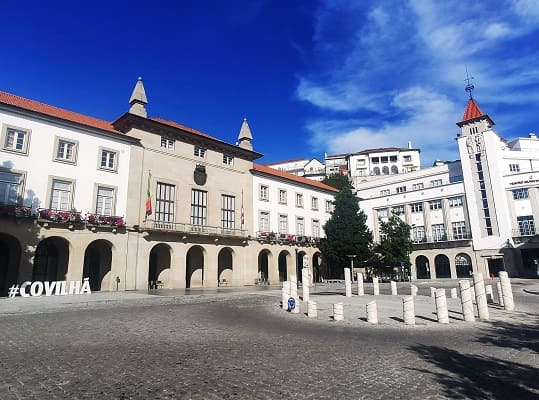
 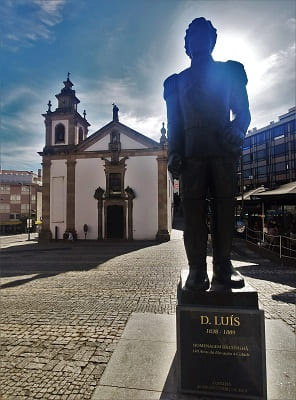
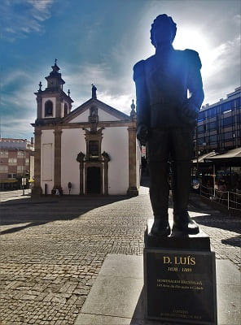
In this Plaza Mayor is the La Misericordia Church, from the 17th century with the statue of Luis, mayor with whom the city prospered well.
Passing towards the historic quarter, we see the church of Nuestra Señora de la Concepción, belonging to the disappeared Convent of São Francisco built in the 16th century, with a late Gothic doorway in which its interior can be highlighted baroque. It belonged to the disappeared São Francisco Convent built in the 16th century, it maintains the original doorway in late Gothic style.
Inside, it is worth admiring the four-pointed star vault and the 16th century side chapels. XVI, belonging to the Rodrigo de Castro family to which the Mayor of Belmonte belonged. In the presbytery, the roof is made of coffers, where you can see paintings alluding to the life of Christ. Of the carved gold panels that cover the walls, the image of San Francisco stands out.
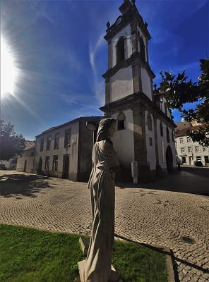
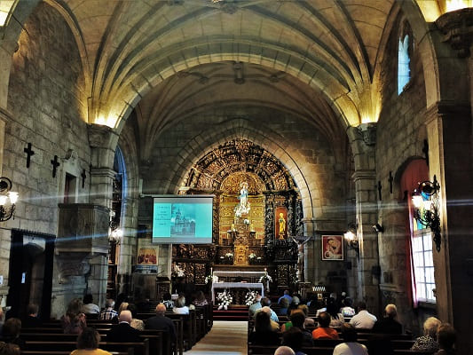
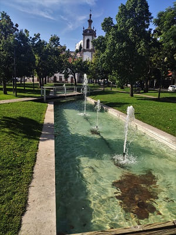
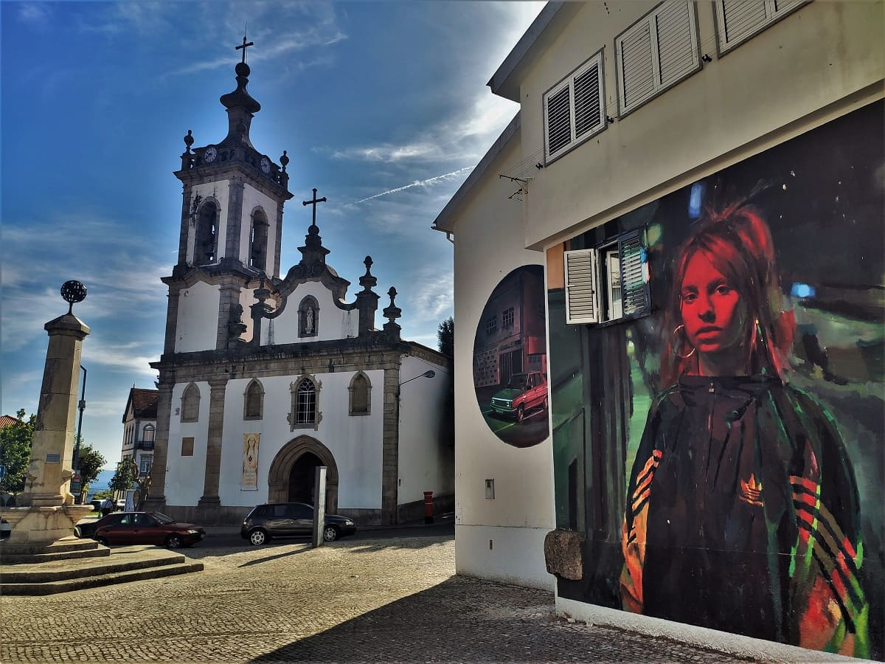
On the other hand, very close there are elevators to go down since from there is the best panoramic view of the city.
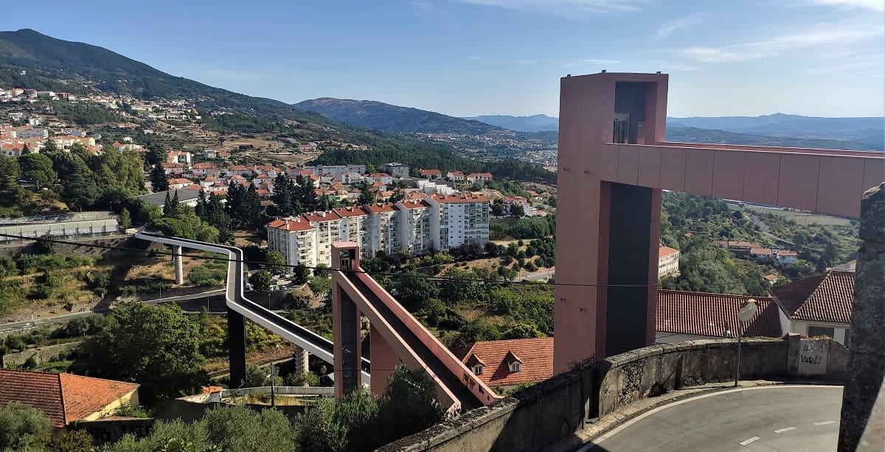
Por último vería la iglesia de Santa María la Mayor, origen que podría ser la antigua mezquita de la ciudad ya que debido al signo montañoso pudo ser un asentamiento árabe de control sobre el norte de Portgual antes de la reconquita. Tiene un estilo muy portuges ya que tiene totalmente decorada con pinturas en azulejos la parte exterior y por dentro de estilo barroco, con varios retablos en sus laterales y en el centro. Remata el altar mayor cuatro tallas sobre cuatro pedestales en la parte superior.
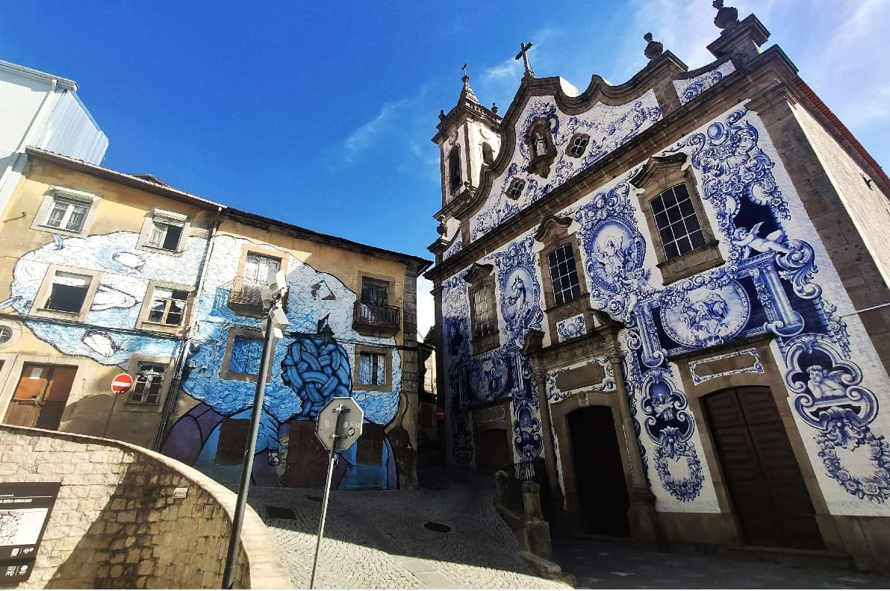
Passing Covilha, he would already be in the Guarda district and would go to its capital.
Guarda is a city with a fairly well-kept medieval-style historic quarter. I left the car in the same old town as it was the weekend and it was free, near the Jose Lemos municipal garden.
From there I will go to the center.
The cathedral and its large square stand out. The Gothic and Manueline style is the Portuguese style that many of the 15th century buildings in the country have. It has several churches and a tower (Ferreiro) that have a modern elevator and good views of the entire town. In the background you can see what remains of the old castle, the keep.
The church of La Misericordia, from the 17th century in the Baroque style that overlooks the square with a beautiful pillory. Going up the street of the castelo I will arrive at the cathedral.


We cross towards the cathedral square, walking through its streets that are full of artisan products and shops. At the back of the cathedral is the old episcopal palace. The cathedral is located in Plaza de Luis Camoes.
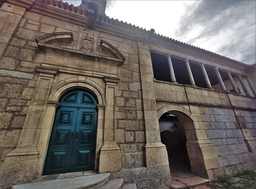
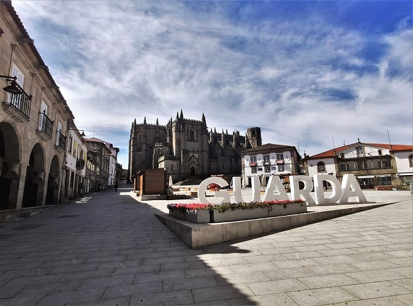
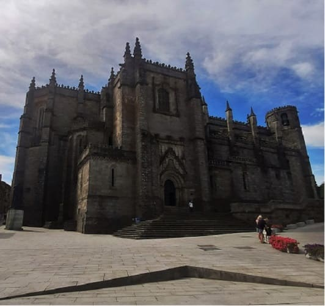
The Sé Catedral de Guarda is one of the most important monuments in Portugal, dating from the 14th century, and which took almost 200 years to build. It is a mix between gothic and manual style.
The material used is granite giving more the feeling of a castle.
The interior gives the feeling of total gloom and dark times, and is very sober. The Renaissance altarpiece made up of statues on 4 shelves stands out, with carvings representing many of the important characters of the New Testament.
The exterior portals are very beautiful, one Gothic and the other Manueline, the Portuguese Gothic style.
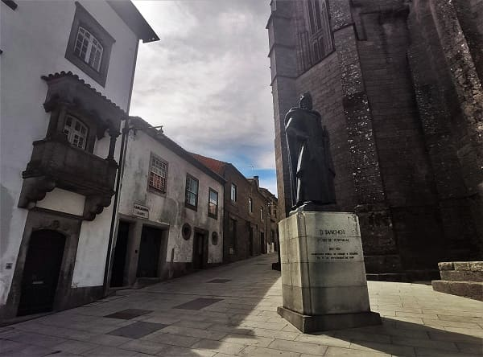
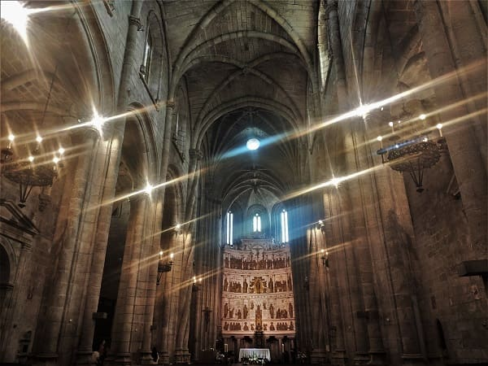
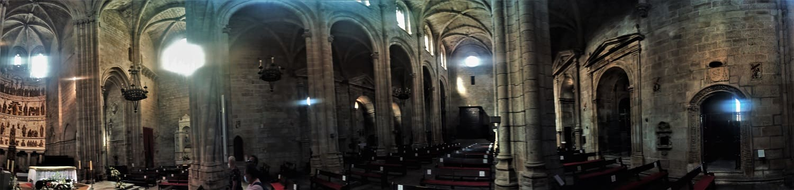
Lastly, I would go up the Ferreiro tower, one of the remains of defensive towers in the city, by elevator thanks to a code they gave me at the tourist office and not go up the stairs. This elevator must be a new construction and they want to promote it. The views are very good both towards the Sé and towards the rest of the city.
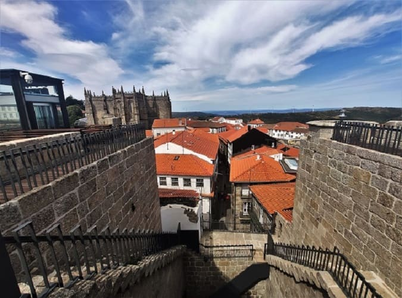
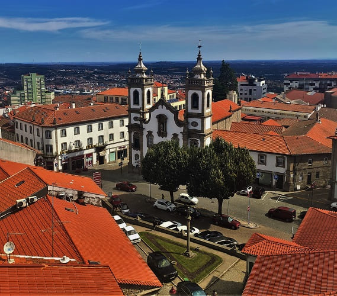
From Guarda I headed for Spain bound for Ciudad Rodrigo, where I would eat.
It is a very monumental city of Salamanca that is not usually found on the way to anywhere except, as in this case, when you go to Portugal from Salamanca or vice versa. Good time to visit. This city surprised me very positively because the historic center is well delimited by the wall that is completely preserved. This can be explored and has several cannons possibly from the times of the Napoleonic invasion.
I would stop just outside the old town, near the ruins of the convent of San Francisco. I thought that as usual, the restaurants near the old town are more expensive but in this case I was wrong. In the old town there are many restaurants with good daily menus and good prices below 15 euros. I had a combo plate in a restaurant but I could have had a much better meal in the town for a little more money.
I approached the convent to see it both outside and through the window, since at that time it was closed. There is a museum about the city inside. The convent dates from the 13th century, being of a Gothic style. The ruins correspond to the epistle and to one of the chapels of the church that keeps on its exterior the coats of arms of the buried families, of which he was bishop of Zamora in the 16th century. It would be destroyed in the war of independence between the people of Spain and the France of Napoleon.


 The Cathedral of Santa María dates from the 12th century. It was ordered to be built by King Fernando II of León. Let us remember that Salamanca in medieval times was part of the kingdom of lions. The cathedral would be completed in the 14th century, so the exterior style is Romanesque but it has all the Gothic details on the portals and finishes of the structure. The exterior apse is Romanesque as well as the exterior carvings or capitals, but the portals are Gothic.
The Cathedral of Santa María dates from the 12th century. It was ordered to be built by King Fernando II of León. Let us remember that Salamanca in medieval times was part of the kingdom of lions. The cathedral would be completed in the 14th century, so the exterior style is Romanesque but it has all the Gothic details on the portals and finishes of the structure. The exterior apse is Romanesque as well as the exterior carvings or capitals, but the portals are Gothic.
This cathedral has one of the most beautiful covers of the peninsular Romanesque, with a frieze of twelve figures from the Old Testament and a tympanum that has a Christ Pantokrator, a very famous and rare construction that is preserved in churches since they used to be damaged and disappear. .
At the main door there are five other friezes on Marian mysteries, with different sculpted carvings.
The portico of the cathedral called Pórtico de la Gloria o del Perdón, with a representation of the apostles and many figures related to the life of Jesus. It is kept behind the tower building, so even though there have been wars and battles that can be seen in the cannon marks on the tower, it is intact, and it is a privilege to contemplate it.
It has a stupendous Gothic cloister and some tombs in it, as well as chapels inside where the nobles of the city of those times are buried.
The main altarpiece of Ciudad Rodrigo was one of the best works of painting of the time. It consisted of 46 different boards, and was up to 12 meters high. The altarpiece was changed for a silver one that would be melted down in wars to cover expenses and the tables of the previous one would be sold. Today they are in a museum in the United States of Arizona.
This is a pity, since the one who goes to see the canvases does not see them in the original place where they were placed and the one who goes to the cathedral knows nothing of what was there in its day.
 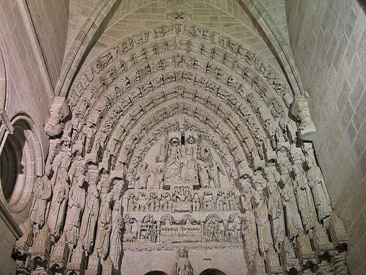
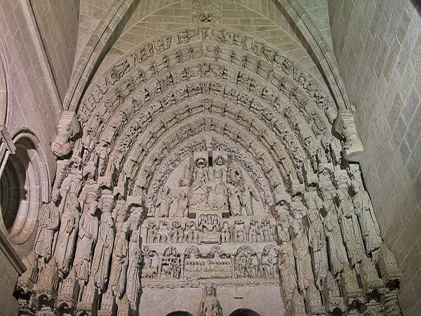
Here the interior of the cathedral, which as can be seen does not have an altarpiece covering the apse, but rather some paintings.
 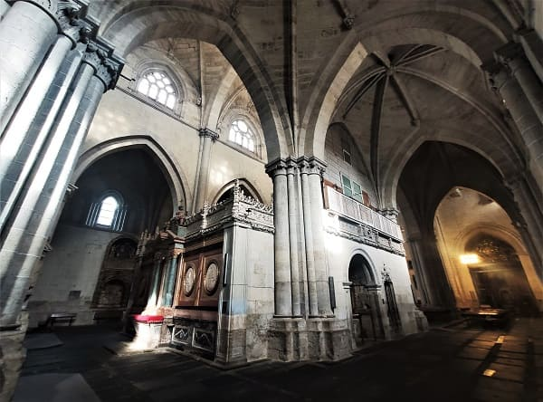
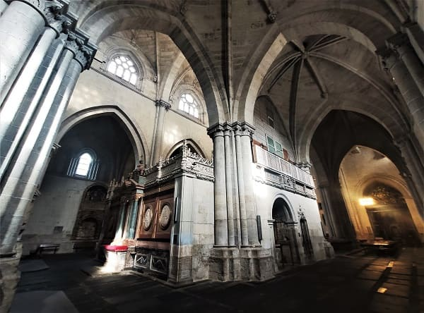
And here the Gothic cloister of the cathedral.
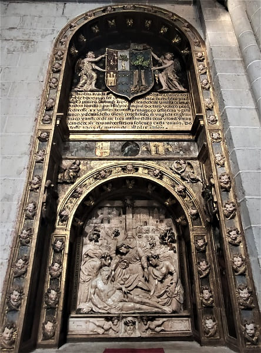
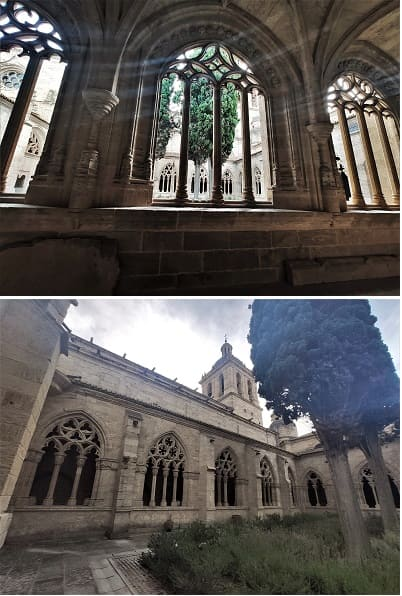
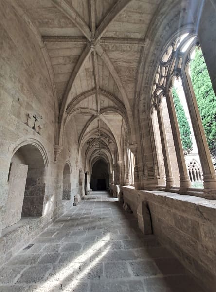
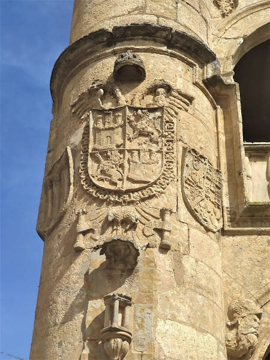
The city has numerous palaces and stately homes such as the Águila Palace, which has a patio with numerous details of the Flamboyant style, the Palace of the Counts of Yeltes, the Montezuma Palace, the Casa de las Cadenas, the Cueto House, the Plaza mayor has a very beautiful town hall that was a palace in its day and nearby is the Cueto house, the Vazquez house, the Herrera Maldonado house, etc.
Here is a list of the different patrimonial assets of the city:


© 2016 - All Rights Reserved - Designed by Sergio López Martínez
El sitio se mantiene gracias a la publicidad, por favor Desactiva Adblock para seguir navegando
He desactivado Adblock![[Valid RSS]](https://www.onepointsync.com/wp-content/uploads/2016/08/valid-rss-rogers.png "Validate my RSS feed")